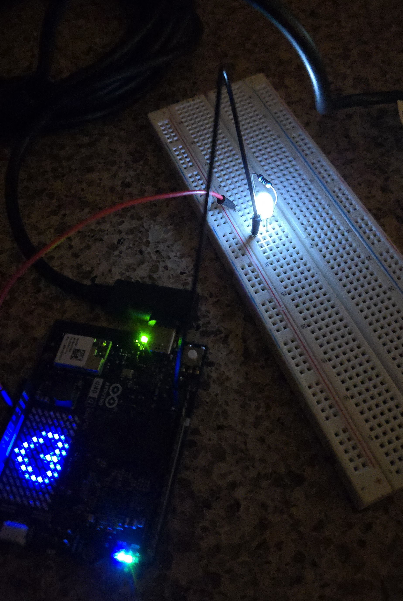

Process & Development



Development Timeline
Weeks 2–3
Ordered prism and began early light experiments. Discovered the prism setup was not working as expected. Fog effects were also removed from the plan.
Week 4
Switched direction and began testing diffraction gratings. Found them more forgiving and visually dynamic.
Week 5
Continued diffraction experiments and began integrating an Arduino for future interactive components.
Week 6
Acquired main structural materials including the large tube and polycarbonate sheets. Began experimenting with diffraction materials and screen placement.
Week 7
Got digital screens working and started experimenting with different arrangements of the components inside the tube to create interesting light patterns and visual effects.
Week 8
Pivoted away from the screens. Second guessed system, restarted research to work towards a more simplified lighting design. Started to explore alternative approaches.
Week 9
Still figuring things out.. Continued learning how to program things with the new Arduino. Started thinking through motion and sensors to make it dynamic. Struggled to settle on an overall concept.
Week 10
Experimented with colors and layouts of various elements. Behind schedule but a new, finalized idea that I feel confident about is in works.